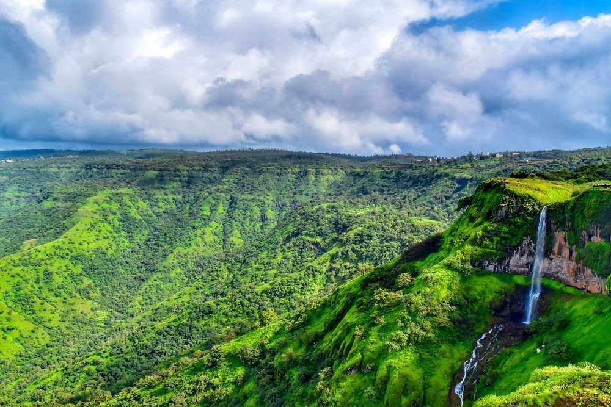
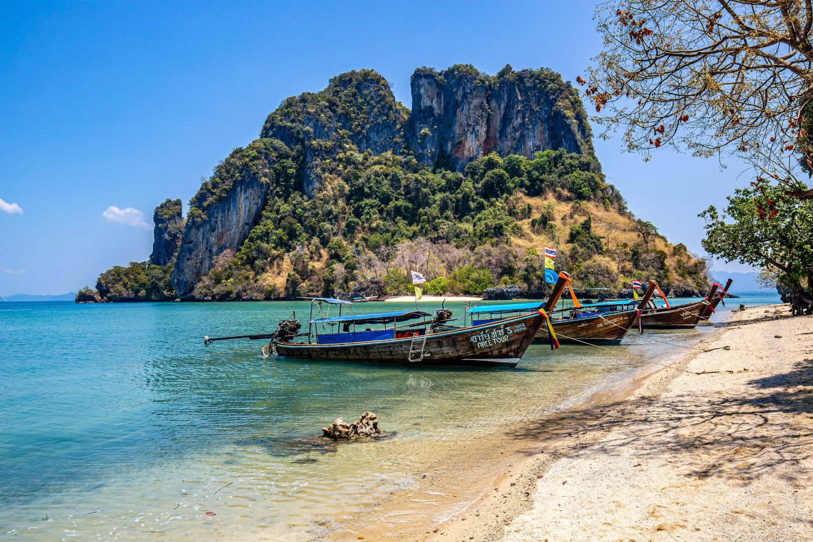

Welcome to the perfect monsoon getaway!
JAIPUR
Discover Jaipur:Where Tradition Meets Modernity Palatial Harmony
Jaipur, known as the "Pink City," stands as a majestic jewel in the crown of Rajasthan, India. Steeped in history, this vibrant city is a captivating blend of ancient traditions and modern allure. The city's iconic architecture, including the Hawa Mahal, City Palace, and Jantar Mantar, narrates tales of royal splendor and architectural brilliance.Jaipur is a treasure trove of cultural heritage, reflecting the grandeur of the Rajput rulers. The city's vibrant festivals, traditional music, dance, and artistry provide visitors with an immersive experience in Rajasthan's rich traditions.
MAHABALESHWAR

Mahabaleshwar's Peaks: Where Every View is Postcard-Perfect Moment
Mahabaleshwar, a charming hill station situated in the Western Ghats of Maharashtra, India, is a popular retreat known for its cool climate, lush greenery, and breathtaking landscapes. Perched at an altitude of about 4,720 feet, Mahabaleshwar offers a refreshing escape from the hustle and bustle of city life.Mahabaleshwar is also known for its pleasant weather throughout the year, making it a favored destination for those seeking a tranquil and rejuvenating getaway. Whether it's exploring nature trails, enjoying scenic viewpoints, or simply savoring the peaceful atmosphere, Mahabaleshwar invites visitors to experience the beauty of the Western Ghats in all its glory.
ANDAMAN and NICOBAR ISLANDS

Andaman's Coral Kingdom:Dive in World of Color and Marine Majesty
The Andaman and Nicobar Islands, a union territory of India in the Bay of Bengal, present a tropical paradise characterized by pristine beaches, lush rainforests, and vibrant coral reefs. Comprising 572 islands, this archipelago is known for its untouched natural beauty and diverse marine life.With its unspoiled landscapes, vibrant marine biodiversity, and a blend of history and adventure, the Andaman and Nicobar Islands beckon travelers to experience a tropical paradise that promises both relaxation and exploration.